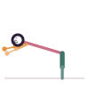

Child's Pose
Balasana
How to
Kneel with the big toes touching and knees wide, then fold forward and rest the forehead on the mat, arms extended or resting alongside the body.
Benefits
- Gently stretches the hips and back
- Calms the mind and slows the breath
- A resting pose between more active poses
Practice
Hold for as long as feels restful, breathing into the back body.

Get the Asanas appFree, no ads, works offline
Google Play
General information, not medical advice. If you have a health condition or pain, talk to a doctor or qualified teacher first.